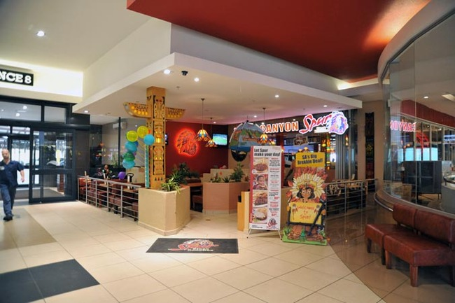
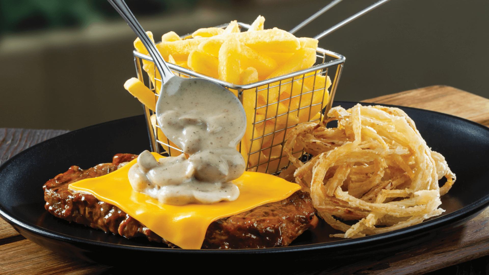
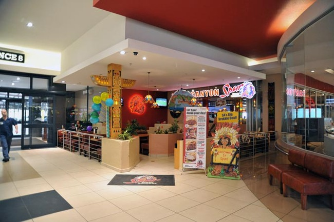
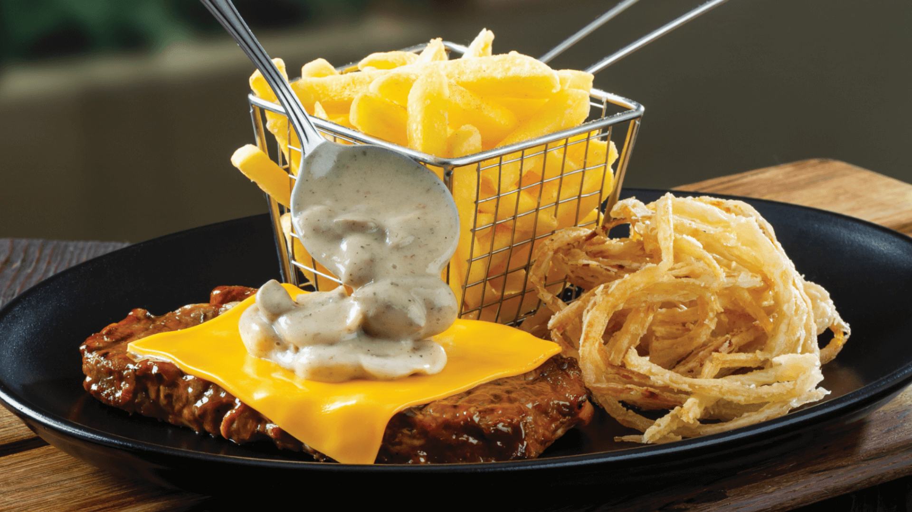

SPUR.
Since 1967 when the first Spur opened in Cape Town, Spur Steak Ranches have been part of the South African family. In the years since then, Spur has helped to create countless special memories and earned a reputation for tasty, nutritious, value-for-money meals. We’ve also grown into an internationally recognised brand with many local and international restaurants. So, what’s our recipe for success? Simple: a warm, relaxed, family-friendly environment; generous portions of great-tasting food; and a hearty helping of quality!
WHERE TO FIND US
At the Upper Level,at the food Court.
 


